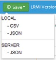

Save the Output as an External File
You may save output from a Tagger session in three ways:
- Locally as a .csv file
- Locally as a json file.
- On the server as a json file
Files saved on the server are submitted to the database and indexed periodically.
Note: use caution when saving files to the server. Records are are identified by URL: if you submit a record for a URL that already exists in the database, the new submission will overwrite the previous submission.
Select the resources

Select the resouces for which to save output.
Click Save.

Click Save. The Save sub-menu displays.
Select the appropropriate save option
From the Save sub-menu, select the appropriate Save option. If you select a local option, the Browse dialog opens to enable you to specify the name and location to save the newly created output file. If you select the Server option, a confirmation message displays.